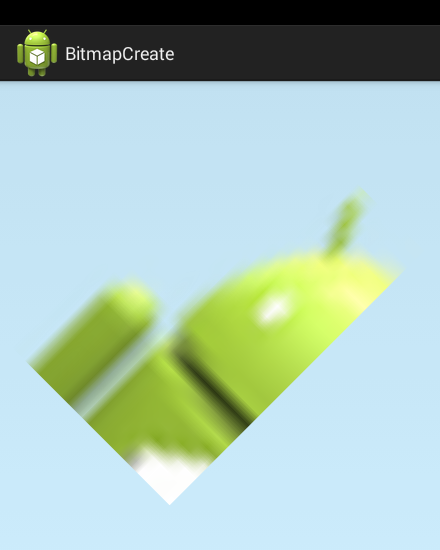
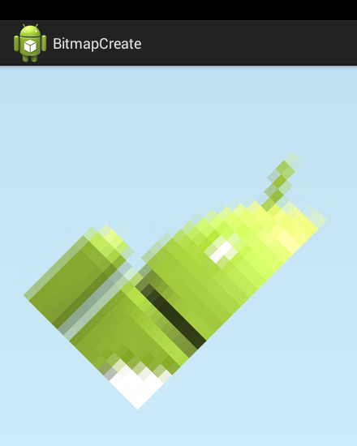
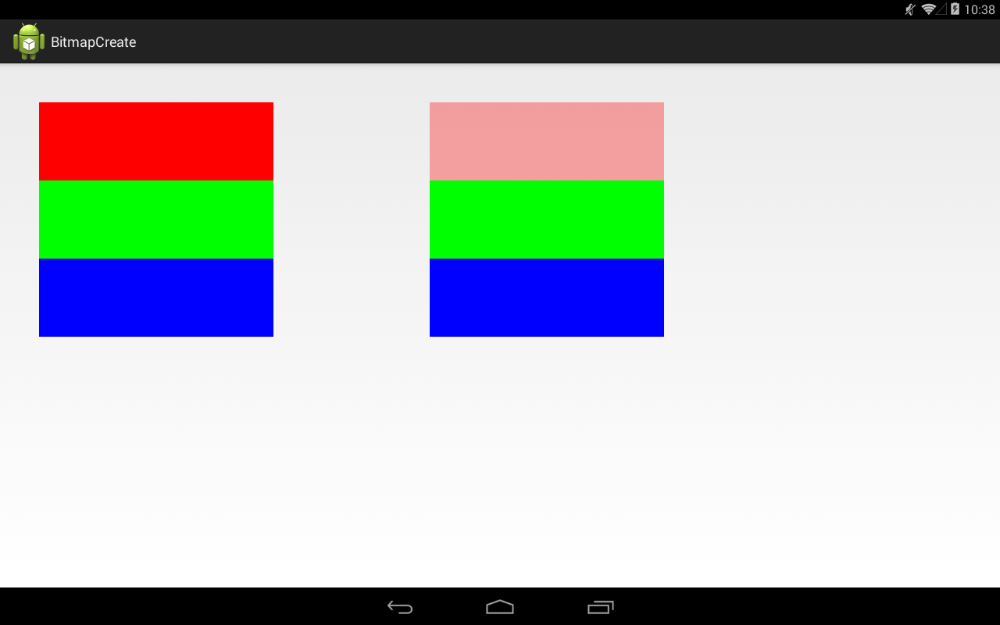
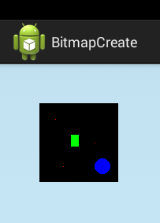
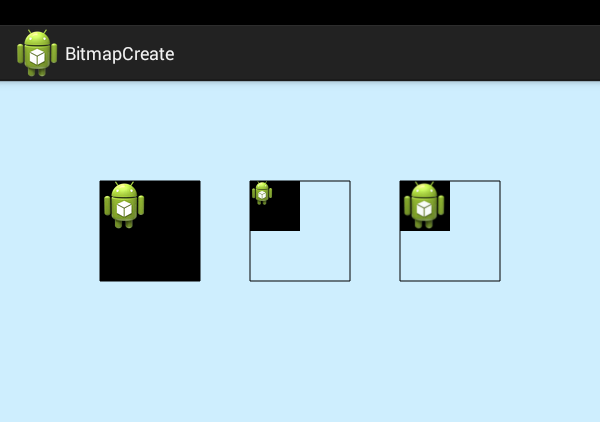

В этом уроке:
- создаем и меняем Bitmap
- разбираемся с density и mutable
В прошлом уроке мы научились читать Bitmap из файла. Сейчас рассмотрим способы его создания. Для этого есть несколько статических методов createBitmap. Все эти методы создания Bitmap можно разделить на три группы:
1) создание на основе другого Bitmap
2) создание из массива цветов
3) создание пустого Bitmap
Рассмотрим эти группы подробно.
Создание на основе другого Bitmap
Эти методы позволяют нам взять готовый Bitmap и скопировать его целиком или частично в новый bitmap. При этом поддерживаются преобразования с помощью матрицы.
В этой группе 4 метода.
1) createBitmap(Bitmap source, int x, int y, int width, int height, Matrix m, boolean filter)
параметры:
source – Bitmap-источник, от которого будем брать его часть
x,y – координаты точки, от которой будем отсчитывать часть
width, height – высота и ширина части
m – матрица для применения преобразований к взятой части
filter – если true, то будет включено сглаживание при scale- и rotate-преобразованиях матрицы (но это приведет к некоторой потере в производительности)
Этот метод возьмет от Bitmap-источника часть указанную координатами и размерами, применит к ней матрицу и фильтр и вернет нам как новый Bitmap. (Хотя, вовсе не обязательно это будет новый объект. Об этом подробнее в конце урока.)
2) createBitmap(Bitmap source, int x, int y, int width, int height)
Аналогичен методу 1, но без использования матрицы и фильтра. Т.е. просто возьмет указанную часть от Bitmap-источника.
Вызывает метод 2 с параметрами createBitmap(src, 0, 0, src.getWidth(), src.getHeight()). Т.е. указанная часть равна всему Bitmap.
В итоге мы получим тот же Bitmap, что и источник.
4) createScaledBitmap(Bitmap src, int dstWidth, int dstHeight, boolean filter)
Вызывает метод 2 с параметрами createBitmap(src, 0, 0, src.getWidth(),src.getHeight(), m, filter). Т.е. указанная часть равна всему Bitmap. Но дополнительно применяется матрица m, где рассчитаны преобразования, чтобы новый Bitmap получился размерами dstWidth на dstHeight. Также, можно включить сглаживающий фильтр.
В итоге мы получим тот же Bitmap, что и источник, но он будет нужных нам размеров, заданных параметрами dstWidth и dstHeight.
Рассмотрим первый метод этой группы на примере.
Создадим проект:
Project name: P1581_BitmapCreate
Build Target: Android 4.4
Application name: BitmapCreate
Package name: ru.startandroid.develop.p1581bitmapcreate
Create Activity: MainActivity
MainActivity.java:
package ru.startandroid.develop.p1581bitmapcreate;
import android.app.Activity;
import android.content.Context;
import android.graphics.Bitmap;
import android.graphics.BitmapFactory;
import android.graphics.Canvas;
import android.graphics.Matrix;
import android.graphics.Paint;
import android.os.Bundle;
import android.view.View;
public class MainActivity extends Activity {
@Override
protected void onCreate(Bundle savedInstanceState) {
super.onCreate(savedInstanceState);
setContentView(new DrawView(this));
}
class DrawView extends View {
Paint paint;
Bitmap bitmapSource;
Bitmap bitmap;
Matrix matrix;
public DrawView(Context context) {
super(context);
paint = new Paint(Paint.ANTI_ALIAS_FLAG);
bitmapSource = BitmapFactory.decodeResource(getResources(), R.drawable.ic_launcher);
matrix = new Matrix();
matrix.postScale(10, 15);
matrix.postRotate(45);
bitmap = Bitmap.createBitmap(bitmapSource, 0, 0, bitmapSource.getWidth()/2, bitmapSource.getHeight()/2, matrix, true);
}
@Override
protected void onDraw(Canvas canvas) {
canvas.drawARGB(80, 102, 204, 255);
canvas.drawBitmap(bitmap, 0, 0, paint);
}
}
}В конструкторе DrawView создаем bitmapSource из стандартной иконки ic_launcher. Настраиваем матрицу на поворот и изменение размера. И создаем bitmap на основе bitmapSource. Берем кусок начиная с точки (0,0) размерами в половину ширины и половину высоты. Т.е. получается левая верхняя четверть изображения. Система возьмет эту часть, применит к ней матрицу и фильтр, и выдаст нам, как новый Bitmap.
В onDraw отображаем полученный Bitmap.
Результат:

А так будет выглядеть полученный Bitmap если фильтр выключить

Создание из массива цветов
Эти методы позволяют нам создать Bitmap из готового массива цветов.
В этой группе 4 метода.
параметры:
display – объект DisplayMetrics, из которого Bitmap возьмет значение densityDpi (зачем он нужен, рассмотрим чуть позже)
colors – массив цветов, т.е. фактически массив пикселов из которых будет состоять созданный Bitmap
offset – отступ от начала colors при чтении его значений
stride – шаг, который будет использован для перемещения по массиву при смене строки Bitmap
width, height – размеры создаваемого Bitmap
config – конфигурация (используемый способ хранения данных о пикселах, мы их рассмотрели подробно на прошлом уроке)
Все параметры в целом понятны. Объясню немного подробнее про stride, насколько мне удалось его понять. Рассмотрим пример, где параметр offset будем считать равным 0, ширину bitmap = 100, stride = 150.
Система создает Bitmap и заполняет его цветами из массива построчно. Но элементы массива она берет не все подряд, а высчитывает индекс первого элемента для каждой новой строки по формуле:
индекс первого элемента для каждой строки = (номер строки – 1) * stride
Т.е для первой строки – индекс первого элемента будет (1-1)*150 = 0. И начиная от него будут взяты цвета для первой строки, т.е. элементы [0-99], всего 100 элементов, т.к. ширина = 100). Для второй строки индекс первого элемента будет (2-1)*150 = 150. И для второй строки буду взяты цвета [150-249]. И т.д.
В итоге мы получаем Bitmap для которого сами указали значения цветов всех его пикселов.
2) createBitmap(DisplayMetrics display, int[] colors, int width, int height, Bitmap.Config config)
Вызывает метод 1 с параметрами createBitmap(display, colors, 0, width, width, height, config). Т.е. offset = 0, а stride = ширине Bitmap (цвета для строк будут браться из массива последовательно, без пропусков при переходе на новую строку).
3) createBitmap(int[] colors, int offset, int stride, int width, int height, Bitmap.Config config)
Аналогичен методу 1, но без использования display.
4) createBitmap(int[] colors, int width, int height, Bitmap.Config config)
Аналогичен методу 2, но без использования display.
Рассмотрим второй метод этой группы на примере. Перепишем класс DrawView:
class DrawView extends View {
Paint paint;
Bitmap bitmap;
Bitmap bitmapAlpha;
public DrawView(Context context) {
super(context);
paint = new Paint(Paint.ANTI_ALIAS_FLAG);
int[] colors = new int[300*300];
Arrays.fill(colors, 0, 300*100, Color.argb(85, 255, 0, 0));
Arrays.fill(colors, 300*100, 300*200, Color.GREEN);
Arrays.fill(colors, 300*200, 300*300, Color.BLUE);
bitmap = Bitmap.createBitmap(colors, 300, 300, Bitmap.Config.RGB_565);
bitmapAlpha = Bitmap.createBitmap(colors, 300, 300, Bitmap.Config.ARGB_8888);
}
@Override
protected void onDraw(Canvas canvas) {
canvas.drawBitmap(bitmap, 50, 50, paint);
canvas.drawBitmap(bitmapAlpha, 550, 50, paint);
}
}В конструкторе DrawView создаем массив цветов количеством 300 * 300 = 90 000 элементов. Число выбрано такое, т.к. картинку мы будем создавать с шириной и высотой 300. Соответственно и цветов (читай пикселов) нам надо будет 300 * 300.
Заполняем первую треть массива полупрозрачным красным цветом, вторую – зеленым, третью – синим.
Создаем bitmap, используя массив цветов и указав: ширину 300, высоту 300, конфигурацию - RGB_565.
Аналогично создаем bitmapAlpha, но конфигурацию укажем ARGB_8888.
В onDraw выводим оба Bitmap-а на канву.
Результат:

Bitmap-ы получились в целом одинаковые, но первый проигнорил прозрачность красного цвета. Это произошло из-за того, что мы указали ему конфиг RGB_565. Он не поддерживает прозрачность и, при создании Bitmap, аlpha-компонент был отброшен. Сохранилась информация только о цвете. Зато этот Bitmap в два раза меньше весит в памяти.
Создание чистого Bitmap
Эти методы позволяют создать чистый Bitmap без каких-либо данных.
В этой группе 2 метода.
1) createBitmap(DisplayMetrics display, int width, int height, Bitmap.Config config)
параметры:
display – объект DisplayMetrics, из которого Bitmap возьмет значение densityDpi (зачем он нужен, рассмотрим чуть позже)
width, height – размеры создаваемого Bitmap
config – конфигурация (используемый способ хранения данных о пикселах, мы их рассмотрели подробно на прошлом уроке)
Создается чистый Bitmap с указанными характеристиками.
2) createBitmap(int width, int height, Bitmap.Config config)
Аналогичен методу 1, но без использования display
Рассмотрим второй метод этой группы на примере. Перепишем класс DrawView:
class DrawView extends View {
Paint paint;
Bitmap bitmap;
public DrawView(Context context) {
super(context);
paint = new Paint(Paint.ANTI_ALIAS_FLAG);
bitmap = Bitmap.createBitmap(100, 100, Bitmap.Config.RGB_565);
bitmap.setPixel(20, 20, Color.RED);
bitmap.setPixel(70, 50, Color.RED);
bitmap.setPixel(30, 80, Color.RED);
int[] colors = new int[10*15];
Arrays.fill(colors, 0, 10*15, Color.GREEN);
bitmap.setPixels(colors, 0, 10, 40, 40, 10, 15);
Canvas canvas = new Canvas(bitmap);
Paint p = new Paint();
p.setColor(Color.BLUE);
canvas.drawCircle(80, 80, 10, p);
}
@Override
protected void onDraw(Canvas canvas) {
canvas.drawARGB(80, 102, 204, 255);
canvas.drawBitmap(bitmap, 50, 50, paint);
}
}
В конструкторе DrawView создаем чистый Bitmap размером 100х100.
Далее попробуем сами в нем что-нить нарисовать.
Методом setPixel ставим в нем три пиксела (20,20), (70,50) и (30,80) в красный цвет.
Методом setPixels можем менять пикселы не по одному, а массивом. Этот метод аналогичен методам создания Bitmap из массива цветов. Первые три параметра – это массив, offset и stride. Затем идут координаты точки, с которой начнем закраску (40,40), затем размер закрашиваемой области (10,15).
Как вы помните, канва – это всего лишь оболочка для Bitmap. Соответственно и наш Bitmap мы можем обернуть в канву и что-нить на нем с помощью этой канвы нарисовать. В нашем примере оборачиваем свежесозданный Bitmap в канву и рисуем на нем синий круг.
В onDraw выводим результат на экран.
Результат:

Видим все фигуры, которые мы выводили.
Также, Bitmap имеет методы:
getPixel – получить значение цвета определенного пиксела
getPixels – получить значения цветов набора пикселов
getGenerationId – получить generationId, который меняется каждый раз, когда меняется Bitmap. Т.е. с его помощью можно отслеживать, что Bitmap был изменен.
Density
У Bitmap есть метод setDensity, туда мы можем передать density, к которому должна относиться эта картинка. Зачем это нужно я не очень понимаю, т.к. у нас один экран и density всегда, вроде как, один и тот же. Но штука интересная, рассмотрим на примере как оно работает и на что влияет.
В манифест для Activity добавьте строку:
android:hardwareAccelerated="false"
Перепишем DrawView:
class DrawView extends View {
Paint paint;
Bitmap bitmap1;
Bitmap bitmap2;
Bitmap bitmap3;
public DrawView(Context context) {
super(context);
paint = new Paint(Paint.ANTI_ALIAS_FLAG);
paint.setStyle(Paint.Style.STROKE);
bitmap1 = Bitmap.createBitmap(100, 100, Bitmap.Config.RGB_565);
bitmap2 = Bitmap.createBitmap(100, 100, Bitmap.Config.RGB_565);
bitmap3 = Bitmap.createBitmap(100, 100, Bitmap.Config.RGB_565);
Bitmap bitmapIcon = BitmapFactory.decodeResource(getResources(), R.drawable.ic_launcher);
Canvas canvas = new Canvas(bitmap1);
canvas.drawBitmap(bitmapIcon, 0, 0, paint);
canvas = new Canvas(bitmap2);
canvas.drawBitmap(bitmapIcon, 0, 0, paint);
bitmap2.setDensity(DisplayMetrics.DENSITY_XHIGH);
bitmap3.setDensity(DisplayMetrics.DENSITY_XHIGH);
canvas = new Canvas(bitmap3);
canvas.drawBitmap(bitmapIcon, 0, 0, paint);
}
@Override
protected void onDraw(Canvas canvas) {
canvas.drawARGB(80, 102, 204, 255);
canvas.translate(100, 100);
canvas.drawRect(0,0,100,100,paint);
canvas.drawBitmap(bitmap1, 0, 0, paint);
canvas.translate(150, 0);
canvas.drawRect(0,0,100,100,paint);
canvas.drawBitmap(bitmap2, 0, 0, paint);
canvas.translate(150, 0);
canvas.drawRect(0,0,100,100,paint);
canvas.drawBitmap(bitmap3, 0, 0, paint);
}
}В конструкторе DrawView создаем три Bitmap размерами 100х100. В bitmapIcon читаем иконку ic_launcher (она размером 48х48 при mdpi). Далее с помощью канвы рисуем иконку на все три Bitmap-а, но с небольшими нюансами.
В первом случае просто рисуем.
Во втором случае рисуем, а затем для bitmap2 ставим density в xhigh.
В третьем случае для bitmap3 ставим density в xhigh, а затем рисуем иконку.
В onDraw выводим все три Bitmap-а и для наглядности рисуем рамки размером 100х100 там же.
Результат:

У меня на эмуляторе экран с density = mdpi. Если у вас density другое, то и результат будет другим.
Разбираемся, почему так получилось.
С первым случаем все понятно. Нарисовали иконку 48х48 и вывели на канву Bitmap размером 100х100.
Во втором случае мы нарисовали иконку на Bitmap, затем поменяли у него density на xhdpi, а затем уже вывели его на канву. Умная канва при этом спросила у Bitmap каков его density (xhdpi) и сравнила со своим (mdpi). Увидев, что Bitmap имеет density в два раза больший (xhdpi = 2 * mdpi) чем нужно, канва просто уменьшила в два раза стороны Bitmap (т.е. он стал 50х50, это видно на скрине) при выводе и тем самым компенсировала разницу в density.
В третьем случае мы сначала поменяли density на xhdpi, затем обернули его в канву (чтобы отличать от основной канвы, которая в onDraw, назовем ее bm3-канва). Эта bm3-канва автоматически подхватила density = xhdpi от bitmap3. Затем мы рисуем на bitmap3 с помощью bm3-канвы иконку. При этом bm3-канва определила, что иконка имеет density = mdpi (mdpi, т.к. это density устройства и оно всем ставится по умолчанию). В итоге получается, что density иконки в два раза меньше, чем density канвы. И канва, чтобы выровнять density просто увеличивает размер иконки при выводе. Т.к. иконка становится размером 96х96, и занимает почти весь Bitmap, который 100х100. Далее bitmap3 выводится на канву и здесь повторяются все те же рассуждения, что были во втором случае и bitmap в итоге выводится уменьшенным в два раза.
Основная мысль тут такова: канва сравнивает density – свой и у Bitmap, который она собирается рисовать. И если они различны, то выполняется подгонка размеров.
Если убрать из манифеста опцию hardwareAccelerated, то основная канва перестанет подгонять размер Bitmap. Почему так происходит, я не знаю.
Mutable
Свойство mutable означает, что Bitmap может быть изменен (через обертку канвой, методом setPixel, и т.п.). Соответственно immutable означает, что Bitmap не может быть изменен, т.е. он readOnly.
Из рассмотренных нами трех групп методов, третья группа возвращает mutable Bitmap, вторая – immutable Bitmap. А первая группа зависит от параметров и Bitmap-источника:
- если источник immutable и новый Bitmap будет являться точной копией исходника, то мы получим на выходе просто Bitmap-исходник. Т.е. это будет тот же Bitmap объект, и даже не его копия. И он останется immutable.
- если же источник mutable или новый Bitmap чем-то отличен от исходника, то мы получаем новый mutable Bitmap объект
Для определения mutable состояния у Bitmap используется метод isMutable.